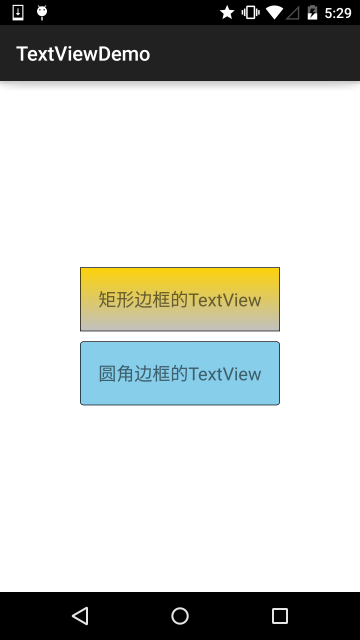
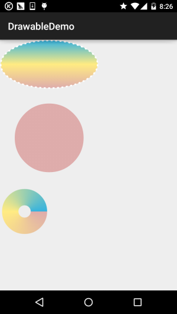

この節の導入：
この節から、Androidにおける描画とアニメーションの基礎知識を学び、上級編のカスタマイズの基礎を築きます！そして最初の節では、AndroidのDrawableを取り上げます！Androidでは実に13種類ものDrawableが提供されているので、この節で一つずつ見ていきましょう！

Drawableリソース使用時の注意事項
- Drawableには2種類あります。一つは私たちの通常の画像リソース、Android Studioでは通常res/mipmapディレクトリに置きます。以前のEclipseとは違いますよ！また、プロジェクトをAndroidプロジェクトモードに切り替えた場合は、mipmapディレクトリに画像を放り込むだけで、ASがhdpi、xhdpi...を自動で振り分けてくれます！XML形式のDrawableリソース、通常はres/drawableディレクトリに置きます。例えば、最も一般的なボタンクリック時の背景切り替え用のSelctorなどです！
- XMLでは、@mipmapまたは@drawableを介して直接Drawableを設定できます。例： android:background = "@mipmap/iv_icon_zhu" / "@drawable/btn_back_selctor" 一方、Javaコードでは、ResourceのgetDrawable(R.mipmap.xxx)を使用してdrawableリソースを取得できます。特定のコントロールの背景を設定する場合、たとえばImageViewなら、コントロール.getDrawale()を直接呼び出してもdrawableオブジェクトを取得できます！
- Androidにおけるdrawableのリソース名には制約があり、次のようにする必要があります：[a-z0-9_.]（つまり、英数字およびと.のみを使用でき）、数字で始めることはできません。そうしないとコンパイルエラーになります： Invalid file name: must contain only [a-z0-9.]！小文字だ！！！！小文字！！！小文字！——大切なことなので3回言いました〜
さて、注意すべき点はだいたい以上です。次に、Androidが提供する13種類のDrawableについて学んでいきましょう！
1.ColorDrawable
最も単純なDrawableです。ColorDrawableをCanvas（キャンバス）に描画するとき、固定された色でPaintを塗りつぶし、キャンバス上に単色の領域を描画します！
1).JavaでColorDrawableを定義する：
ColorDrawable drawable = new ColorDrawable(0xffff2200); txtShow.setBackground(drawable);
2).XMLでColorDrawableを定義する：
<?xml version="1.0" encoding="utf-8"?>
<color
xmlns:android="http://schemas.android.com/apk/res/android"
android:color="#FF0000"/>
もちろん上記の使い方はあまり使われません。より一般的には、res/valuesディレクトリにcolor.xmlファイルを作成し、使用したい色の値をそこに書き、必要に応じて@colorで対応する値を取得します。例：
3).color.xmlファイルを作成する
例：
<?xml version="1.0" encoding="utf-8"?>
<resources>
<color name="material_grey_100">#fff5f5f5</color>
<color name="material_grey_300">#ffe0e0e0</color>
<color name="material_grey_50">#fffafafa</color>
<color name="material_grey_600">#ff757575</color>
<color name="material_grey_800">#ff424242</color>
<color name="material_grey_850">#ff303030</color>
<color name="material_grey_900">#ff212121</color>
</resources>
そして、XMLファイル内であれば@color/xxxで対応するcolor値を取得できます。Javaの場合は：
int mycolor = getResources().getColor(R.color.mycolor); btn.setBackgroundColor(mycolor);
ps：もう一つ注意が必要です。Javaで色の値を直接定義する場合は、0xを付ける必要があり、透明度を省略してはいけません：
int mycolor = 0xff123456; btn.setBackgroundColor(mycolor);
4).システム定義済みのcolorを使用する：
例：BLACK（黒）、BLUE（青）、CYAN（シアン）、GRAY（グレー）、GREEN（緑）、RED（赤）、WRITE（白）、YELLOW（黄）！使い方：btn.setBackgroundColor(Color.BLUE);システムの色を取得してから設定することもできます：
int getcolor = Resources.getSystem().getColor(android.R.color.holo_green_light); btn.setBackgroundColor(getcolor);
XMLで使用する：android:background="@android:color/black"
5).静的メソッドargbを使用して色を設定する：
Androidではint型のデータで色の値を表します。通常は16進数で、0xで始まります。色の値は透明度alphaとRGB（赤緑青）の三原色で定義され、"#"で始まり、その後ろに次の順で続きます：
透明度-赤-緑-青;eg:#RGB #ARGB #RRGGBB #AARRGGBB
各要素は1バイト（8ビット）で表されるため、値の範囲は0〜255です。XMLで色を設定する場合は透明度を省略できますが、Javaコードで設定する場合は透明度の値を明示する必要があります。省略すると完全に透明になり、その場合は効果がありませんよ〜 例：0xFF0000は赤を表しますが、直接このように書いても何も効果がありません。0xFFFF0000のように書くべきです。Javaコードで色の値を設定するときは、先頭に透明度を追加することを覚えておきましょう〜 例：（パラメータは順に：透明度、赤の値、緑の値、青の値）txtShow.setBackgroundColor(Color.argb(0xff, 0x00, 0x00, 0x00));
2.NiewPatchDrawable
.9画像のことです。前に私たちは1.6 .9（九妹）画像の扱い方すでに詳しく.9画像の作り方を説明しました！Android Frameworkは.9画像を表示する際に効率的なグラフィック最適化アルゴリズムを使用するため、特別な処理をしなくても画像のストレッチに自動対応できます〜 また、ASを使用する際は以下の点に注意してください：
- 1. .9画像はmipmapディレクトリに置くことができず、drawableディレクトリに置く必要があります！
- 2. ASでの.9画像には黒い線が必要です。そうしないとコンパイルが通りません。今朝、私の阿君の従兄がグループで、彼の会社のデザイナーが黒い線のない.9画像を渡してきたと言っていました。あるソフトウェアで作成したもので、Eclipseでは使用できたらしいです。そう、黒い線のない.9です。うわっ、しかしASに切り替えたら、コンパイルがまったく通りませんでした！ASが.9画像を認識する基準の一つに、黒い点または黒い線が必要だということだと思います！また、従兄が紹介していた黒い線を除去する方法：9patch(.9)で自分で描いた黒点/黒線を消す方法具体的には試していませんが、興味があれば自分で試してみてください。でも黒い線ってそんなに目障りですか...強迫症ではないので気になりません！もう一点、他人のAPKを解凍して.9素材を取り出したとき、黒い線がなくても同様にエラーになります！黒い線のある.9素材を取り出す場合は、直接解凍するのではなくAPKを逆コンパイルする必要があります！！！逆コンパイルは前述のとおりですので、ここでは詳しく説明しません！
次に、あまり役に立たない2つのものを紹介します：
XMLでNinePatchDrawableを定義する:
<!--pic9.xml-->
<!--参数依次为:引用的.9图片,是否对位图进行抖动处理-->
<?xml version="1.0" encoding="utf-8"?>
<nine-patch
xmlns:android="http://schemas.android.com/apk/res/android"
android:src="@drawable/dule_pic.html"
android:dither="true"/>
Bitmapを使用して.9画像をラップする:
<!--pic9.xml-->
<!--参数依次为:引用的.9图片,是否对位图进行抖动处理-->
<?xml version="1.0" encoding="utf-8"?>
<bitmap
xmlns:android="http://schemas.android.com/apk/res/android"
android:src="@drawable/dule_pic.html"
android:dither="true"/>
3.ShapeDrawable
形状のDrawableです。基本的な幾何学図形（矩形、円、線など）を定義します。ルート要素は<shape../>です。ノードがかなり多いですが、関連するノードは以下のとおりです：
- ① <shape>:
- ~ visible: 表示するかどうかを設定します
- ~ shape: 形状。選択可能：rectangle（矩形、正方形を含む）、oval（楕円、円を含む）、line（線分）、ring（リング）
- ~ innerRadiusRatio: shapeがringの場合のみ有効で、リング内半径が半径に占める比率を表します。innerRadiusを設定した場合は無視されます
- ~ innerRadius: shapeがringの場合のみ有効で、リングの内半径のサイズを表します
- ~ thicknessRatio: shapeがringの場合のみ有効で、リングの厚さが半径に占める比率を表します
- ~ thickness: shapeがringの場合のみ有効で、リングの厚さ、つまり外半径と内半径の差を表します
- ~ useLevel: shapeがringの場合のみ有効で、レベルに応じてリングの一部を表示するかどうかを表します
- ②<size>:
- ~ width: 図形の幅
- ~ height: 図形の高さ
- ③<gradient>：後でGradientDrawableで説明します〜
- ④<solid>
- ~ color: 背景の塗りつぶし色。solidを設定すると、gradientで設定したすべての効果が上書きされます!!!!!!
- ⑤<stroke>
- ~ width: 枠線の幅
- ~ color: 枠線の色
- ~ dashWidth: 枠線の破線セグメントの長さ
- ~ dashGap: 枠線の破線セグメントの間隔
- ⑥<conner>
- ~ radius: 角丸の半径。上下左右の四隅に適用されます
- ~ topLeftRadius,topRightRadius,BottomLeftRadius,tBottomRightRadius: 左上、右上、左下、右下の順の角丸の値です。必要に応じて設定してください！
- ⑦<padding>
- left,top,right,bottm：順に左、上、右、下方向のマージンです！
使用例： 2.3.1 TextView（テキストボックス）詳解

4.GradientDrawable
グラデーション領域を持つDrawableで、線形グラデーション、放射グラデーション、タイリンググラデーションの効果を実現できます。コアノード：<gradient/>、以下のオプション属性があります：
- startColor: グラデーションの開始色
- centerColor: グラデーションの中間色
- endColor: グラデーションの終了色
- type: グラデーションのタイプ。選択可能（linear,radial,sweep), 線形グラデーション（グラデーション角度の設定可）、放射グラデーション（中央から周囲へ放射）、タイリンググラデーション
- centerX: グラデーションの中間色のX座標。値の範囲：0〜1
- centerY: グラデーションの中間色のY座標。値の範囲：0〜1
- angle: linearタイプのグラデーションのみ有効で、グラデーションの角度を表し、45の倍数である必要があります
- gradientRadius: radialとsweepタイプのグラデーションのみ有効で、radialは必ず設定する必要があり、グラデーション効果の半径を表します
- useLevel: levelに基づいてグラデーション効果を描画するかどうかを判断します
コード例：(3種類のグラデーション効果のデモ)：
実行結果図：

まずdrawableの下に3つのグラデーションxmlファイルを作成します：
(線形グラデーション)gradient_linear.xml:
<?xml version="1.0" encoding="utf-8"?>
<shape
xmlns:android="http://schemas.android.com/apk/res/android"
android:shape="oval" >
<gradient
android:angle="90"
android:centerColor="#FFEB82"
android:endColor="#35B2DE"
android:startColor="#DEACAB" />
<stroke
android:dashGap="5dip"
android:dashWidth="4dip"
android:width="3dip"
android:color="#fff" />
</shape>
(放射グラデーション)gradient_radial.xml:
<?xml version="1.0" encoding="utf-8"?>
<shape xmlns:android="http://schemas.android.com/apk/res/android"
android:innerRadius="0dip"
android:shape="ring"
android:thickness="70dip"
android:useLevel="false" >
<gradient
android:centerColor="#FFEB82"
android:endColor="#35B2DE"
android:gradientRadius="70"
android:startColor="#DEACAB"
android:type="radial"
android:useLevel="false" />
</shape>
(スイープグラデーション)gradient_sweep.xml:
<?xml version="1.0" encoding="utf-8"?>
<shape xmlns:android="http://schemas.android.com/apk/res/android"
android:innerRadiusRatio="8"
android:shape="ring"
android:thicknessRatio="3"
android:useLevel="false" >
<gradient
android:centerColor="#FFEB82"
android:endColor="#35B2DE"
android:startColor="#DEACAB"
android:type="sweep"
android:useLevel="false" />
</shape>
3つのdrawableを呼び出しますactivity_main.xml:
<LinearLayout xmlns:android="http://schemas.android.com/apk/res/android"
xmlns:tools="http://schemas.android.com/tools"
android:layout_width="match_parent"
android:layout_height="match_parent"
android:orientation="vertical">
<TextView
android:id="@+id/txtShow1"
android:layout_width="200dp"
android:layout_height="100dp"
android:background="@drawable/gradient_linear" />
<TextView
android:id="@+id/txtShow2"
android:layout_width="200dp"
android:layout_height="200dp"
android:background="@drawable/gradient_radial" />
<TextView
android:id="@+id/txtShow3"
android:layout_width="100dp"
android:layout_height="100dp"
android:background="@drawable/gradient_sweep" />
</LinearLayout>
はい、これだけ簡単です~もちろん、より複雑な図形を描画したい場合は、xmlファイルだけでは不十分で、 より複雑な効果はJavaコードで実現する必要があります。以下はネットから引用したソースコードです：
実行結果図：
実装コード：
MainActivity.java：
public class MainActivity extends AppCompatActivity {
@Override
protected void onCreate(Bundle savedInstanceState) {
super.onCreate(savedInstanceState);
setContentView(new SampleView(this));
}
private static class SampleView extends View {
private ShapeDrawable[] mDrawables;
private static Shader makeSweep() {
return new SweepGradient(150, 25,
new int[] { 0xFFFF0000, 0xFF00FF00, 0xFF0000FF, 0xFFFF0000 },
null);
}
private static Shader makeLinear() {
return new LinearGradient(0, 0, 50, 50,
new int[] { 0xFFFF0000, 0xFF00FF00, 0xFF0000FF },
null, Shader.TileMode.MIRROR);
}
private static Shader makeTiling() {
int[] pixels = new int[] { 0xFFFF0000, 0xFF00FF00, 0xFF0000FF, 0};
Bitmap bm = Bitmap.createBitmap(pixels, 2, 2,
Bitmap.Config.ARGB_8888);
return new BitmapShader(bm, Shader.TileMode.REPEAT,
Shader.TileMode.REPEAT);
}
private static class MyShapeDrawable extends ShapeDrawable {
private Paint mStrokePaint = new Paint(Paint.ANTI_ALIAS_FLAG);
public MyShapeDrawable(Shape s) {
super(s);
mStrokePaint.setStyle(Paint.Style.STROKE);
}
public Paint getStrokePaint() {
return mStrokePaint;
}
@Override protected void onDraw(Shape s, Canvas c, Paint p) {
s.draw(c, p);
s.draw(c, mStrokePaint);
}
}
public SampleView(Context context) {
super(context);
setFocusable(true);
float[] outerR = new float[] { 12, 12, 12, 12, 0, 0, 0, 0 };
RectF inset = new RectF(6, 6, 6, 6);
float[] innerR = new float[] { 12, 12, 0, 0, 12, 12, 0, 0 };
Path path = new Path();
path.moveTo(50, 0);
path.lineTo(0, 50);
path.lineTo(50, 100);
path.lineTo(100, 50);
path.close();
mDrawables = new ShapeDrawable[7];
mDrawables[0] = new ShapeDrawable(new RectShape());
mDrawables[1] = new ShapeDrawable(new OvalShape());
mDrawables[2] = new ShapeDrawable(new RoundRectShape(outerR, null,
null));
mDrawables[3] = new ShapeDrawable(new RoundRectShape(outerR, inset,
null));
mDrawables[4] = new ShapeDrawable(new RoundRectShape(outerR, inset,
innerR));
mDrawables[5] = new ShapeDrawable(new PathShape(path, 100, 100));
mDrawables[6] = new MyShapeDrawable(new ArcShape(45, -270));
mDrawables[0].getPaint().setColor(0xFFFF0000);
mDrawables[1].getPaint().setColor(0xFF00FF00);
mDrawables[2].getPaint().setColor(0xFF0000FF);
mDrawables[3].getPaint().setShader(makeSweep());
mDrawables[4].getPaint().setShader(makeLinear());
mDrawables[5].getPaint().setShader(makeTiling());
mDrawables[6].getPaint().setColor(0x88FF8844);
PathEffect pe = new DiscretePathEffect(10, 4);
PathEffect pe2 = new CornerPathEffect(4);
mDrawables[3].getPaint().setPathEffect(
new ComposePathEffect(pe2, pe));
MyShapeDrawable msd = (MyShapeDrawable)mDrawables[6];
msd.getStrokePaint().setStrokeWidth(4);
}
@Override protected void onDraw(Canvas canvas) {
int x = 10;
int y = 10;
int width = 400;
int height = 100;
for (Drawable dr : mDrawables) {
dr.setBounds(x, y, x + width, y + height);
dr.draw(canvas);
y += height + 5;
}
}
}
}
コードはShapeDrawableとPathEffectを使用しています。前者は通常の図形のラッパーで、以下を含みます： ArcShape、OvalShape、PathShape、RectShape、RoundRectShape！
PathEffectはパスエフェクトで、以下を含みます：CornerPathEffect、DashPathEffect、DiscretePathEffect 複雑な図形の枠線などを作成できます...
このGradientDrawableのグラデーションについてはここまでです。最後のこの機能に興味がある場合は、次を参照してください：appium/android-apidemos
この節のまとめ：
はい、このセクションではまずColorDrawable、NinePatchDrawable、ShapeDrawable、GradientDrawableを学びます
はい、まず4つのDrawableです。もちろんこれらは焼き直しで、以前にも書いたことがありますが、チュートリアルの完全性のため、もう一度書くことにしました~また、基礎チュートリアルを書き終えた後、以前書いたブログの一部は削除します！
クリックしてノートを共有
<p style="font-size:14px;">ノートはこの記事の内容の拡張である必要があります！</p><br> <p style="font-size:12px;"><a href="../tougao.html" target="_blank">記事の投稿は、ここをクリックしてください</a></p> <p style="font-size:14px;"><a href="./runoob-user-test-intro.html" target="_blank">登録招待コードの取得方法</a></p> <h3 class="text-muted"><i class="fa fa-info-circle" aria-hidden="true"></i> ノートを共有する前に<a href=".." class="runoob-pop">ログイン</a>する必要があります！</h3> <p><a href="./runoob-user-test-intro.html" target="_blank">登録招待コードの取得方法</a></p>